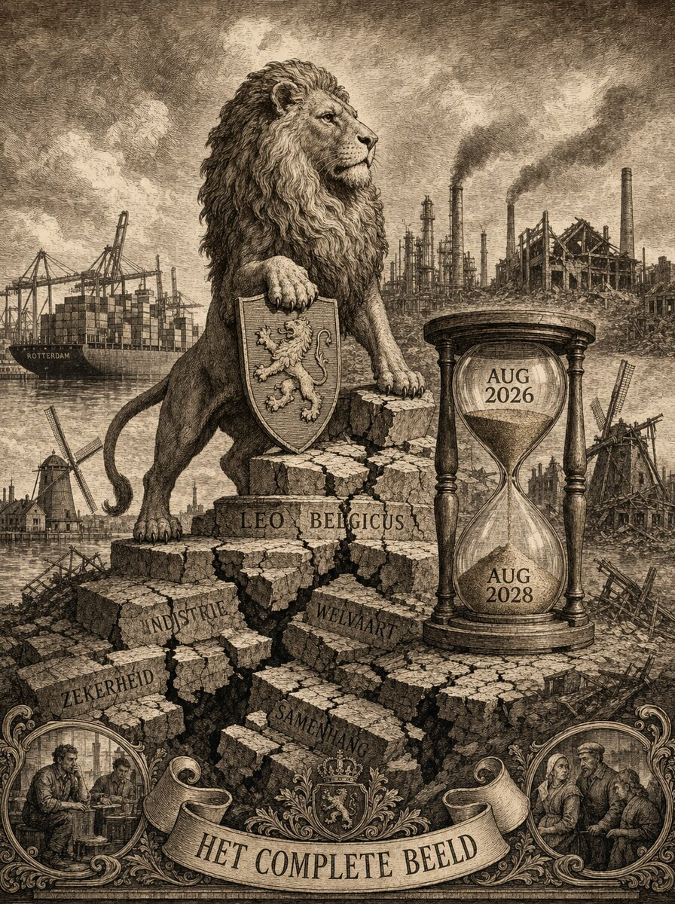
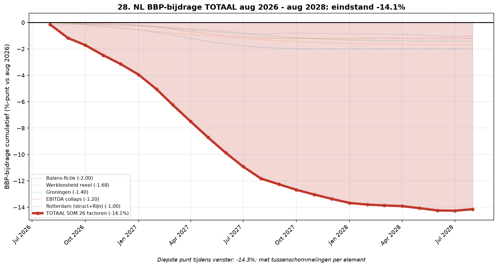

Nederland aug 2026 – aug 2028: het complete beeld
Compleet en volledig beeld van de systeembreuk en revolutie-kans. Alle 28 breuk-elementen, elk uitgewerkt met per-maand-dynamiek, brondocumentatie, kritieke datums, mechanica, uitwerking en revolutie-scenario's. Peildatum: 15 augustus 2026.
Door Jacobus van Merksteijn

Wat er werkelijk gebeurt: de kloof officieel–reëel
A.1 Wat er werkelijk gebeurt: de kloof officieel--reëel
Nederland verkeert in augustus 2026 niet in een conjunctuurdip, niet in
een structurele aanpassing en niet in een generatiewisseling. Wat de
cijfers laten zien is systematische ontmanteling van de
middenklasse-economie in een tempo dat de officiële statistieken 12 tot
24 maanden achterlopen. De kloof tussen wat het CBS meet en wat
ondernemers dagelijks meemaken in de reële economie is zo groot geworden
dat het beeld dat de politiek gebruikt om beleid te maken niet meer
klopt met de werkelijkheid waarin die beleidsmaatregelen moeten landen.
Concrete voorbeelden van de kloof:
- Het CBS meet werkloosheid van 3,8% (augustus 2026). Reële werkloosheid inclusief ZZP-conversie, vervroegd pensioen en niet-vervangen vacatures ligt bij 5,5-6%. Reden: personeel dat vertrekt wordt niet vervangen, gaat als ZZP-er verder of neemt vervroegd pensioen --- nergens komt dat in UWV-cijfers.
- Een coating-onderneming in Nederland ging tussen 2020 en 2026 van 230 naar 56 personeel (-76%) en van 3.000 ton/week naar ~100 ton/week productievolume (-97%). Deze cijfers verschijnen niet in CBS-werkloosheid (via ZZP-conversie), niet in KVK-stoppers-cijfers (bedrijf blijft bestaan via privévermogen-injectie), en niet in bedrijfsstatistieken van CBS SBI 20510 (te kleine cel binnen bredere sector).
- Lengers Yachts had €100 miljoen voorraad op de balans (KVK jaarrekening 2023). Werkelijke voorraad augustus 2026: €20-25 miljoen in gunstigste scenario. Verwachte liquidatie-opbrengst door curator: €10-15 miljoen. Boekwaarde-verlies alleen op voorraad: €75-90 miljoen --- dat verschijnt pas 2027-2028 in curator-rapporten, niet in officiële bedrijfsstatistieken.
- Bij 50.000 Nederlandse MKB-bedrijven die naar verwachting 2027-2030 stoppen (5 op 6 middenstand-exit-intentie) met vergelijkbare balans-fictie: €25-100 miljard niet-erkende verliezen die pas zichtbaar worden bij verkoop of afwikkeling --- 12 tot 24 maanden na de gebeurtenis.
Deze kloof betekent dat het beleid dat gemaakt wordt op basis van
CBS-cijfers, KVK-tabellen en De Nederlandsche Bank-rapportages
structureel te laat is voor de werkelijkheid die het probeert te sturen.
Elk kabinet dat baseert op deze data reageert 12-24 maanden na de
feiten, terwijl de crisis zich per maand verdiept. Deze vertraging is
niet een technisch probleem dat opgelost kan worden met betere
data-inwinning --- het is structureel omdat de meting per definitie
achteraf gebeurt, terwijl de werkelijkheid vooruit beweegt.
A.2 De vier gelijktijdige processen die het systeem breken
Vier processen lopen tegelijk en versterken elkaar:
A.2.1 Systematische ontmanteling MKB
5 op 6 middenstand-ondernemers wil weg (ABN AMRO/Ipsos I&O december
2025: 2 op 3 wil binnen 10 jaar stoppen; MCR Retailminds: 75% van 55+
ondernemers zonder opvolger; KVK Q1 2025: +37% stoppers = sterkste
stijging in 10 jaar). Reden is niet één factor maar een combinatie:
- 2 jaar loondoorbetaling bij ziekte (Europees gemiddelde 2 weken) maakt aannemen risicovol
- Fiscale asymmetrie ZZP vs personeel maakt personeel duurder dan zelfstandige
- Regeldruk: NL-MKB krijgt jaarlijks 3.000+ pagina's nieuwe wetgeving te verwerken
- Kinderopvang, kinderbijslag, pensioen: administratieve last onhoudbaar bij <10 werknemers
- AI-vervanging: 60% hoger opgeleiden op de tocht binnen 5 jaar (Deloitte-rapport september 2025)
- Bedrijfsopvolging haperen: geen opvolger, geen koper
- EBITDA-multiple opschmucken naar record 5,0 (Brookz H2 2025) om verkoop-waarde vast te houden
Deze ontmanteling loopt door 2026-2030. Bij ongewijzigd beleid: 30-40%
krimp NL-MKB in vijf jaar. Werknemers verdwijnen naar ZZP, vervroegd
pensioen of overheid. Bedrijven verdwijnen zonder faillissement
(privévermogen-injectie), verdwijnen mét faillissement (Lengers-model),
of worden opgekocht door grote spelers tegen liquidatie-prijzen.
A.2.2 DE industriële ineenstorting die NL meesleept
Nederland exporteert 25% naar Duitsland (€98 miljard aan goederen in
2025 volgens DNHK). Duitse industrie kraakt: BMW kondigde 29 juli 2026
8.000 vrijwillige ontslagen aan (Reuters, NRC). Volkswagen zit "in
zwaar weer" (AutoScout24). Bosch heeft 22.000 ontslagen in de pijplijn.
ThyssenKrupp 11.000. Bayer 13.500. ZF 14.000. Continental 7.150.
De directe pijplijn is 114.250 banen. Bij multiplicator 6× voor
auto-industrie en 3× voor andere industrie (RWI/IW/Rosalux-onderzoek,
US-benchmark Hill: 6,6×) betekent dat ~1,95 miljoen banen weg over 2-3
jaar. DE-werkloosheid gaat richting 12% (Weimar-drempel) tegen 2028.
Effect op NL: Rotterdam-doorvoer nu al -17% t.o.v. 2024 (structureel,
niet-omkeerbaar), stijgend naar -30% eind 2028. Tata Steel IJmuiden
onder druk. VDL-Nedcar zonder opvolgorde na BMW-verlies. Bosch NL,
Signify, DAF, Bosch NL onder druk. Signify LED-fabrieken sluiten.
Rotterdam-chemiecluster Q1 2026 al -7,2% doorvoer.
A.2.3 Balans-fictie op EU-schaal
De EBITDA-multiple van NL-MKB bereikte in H2 2025 een record van 5,0
(Brookz Overname Barometer). Dat is de hoogste waardering sinds
meting-start in 2015. De reden is niet organische groei --- die is er
niet --- maar het "opschmucken" van verkoopwaarde: personeel op
ZZP-basis om lasten te verlagen, voorraad bijgeboekt in plaats van
afgewaardeerd, privévermogen ingezet als leningen aan het bedrijf,
boekwaarde vastgehouden ver boven marktwaarde.
Bij Lengers Yachts werd deze fictie zichtbaar: €100 miljoen voorraad op
de balans, werkelijke waarde €20-25 miljoen, liquidatie-opbrengst €10-15
miljoen. Boekwaarde-collaps van 85-90%. Dit is niet een uitzondering ---
dit is het patroon dat bij 50.000 NL-MKB die 2027-2030 gaat stoppen
zichtbaar zal worden. Gemiddeld €500k-€2 mln balans-fictie per bedrijf =
€25-100 miljard niet-erkende verliezen die de komende 4 jaar zichtbaar
worden.
A.2.4 Vijf zwarte gaten in de begroting
Vijf posten die niet in de reguliere Prinsjesdag-begroting zichtbaar
zijn maar wel de begroting de komende jaren gaan raken:
- Accountants Big Four vervangen door AI: 60% hoger opgeleiden op de tocht = productiviteitsverlies + BTW-derving
- Hoger opgeleiden 60% AI-migratie: netto 500.000-800.000 banen structureel weg in 5 jaar
- Kinderopvang bovenmatig gedeelte: €242 mln (2024) → €730 mln (2026) → €850 mln (2027)
- RWS + ProRail achterstallig onderhoud: €34,5 mrd tot 2038 (Rekenkamer), Minister Karremans mrt 2026 €80 mrd totaal-opgave niet gedekt
- Vrachtauto electrificatie: €300k+ aanschaf, €75k laadinfra, €50k TCO/jaar bij ZE-zone deadlines 2027 en 2028
Elk van deze vijf posten is geen operationele uitgave maar een
cascade-uitgave: als er niet wordt betaald, valt de dienst uit (RWS
bruggen sluiten), stopt de sector (vrachtauto's zonder e-truck krijgen
boete of ontheffing), of moet de belastingdienst compenseren
(kinderopvang). Politiek is het niet mogelijk om deze uitgaven af te
wijzen --- dus komen ze bovenop de reguliere begroting, wat de al
onhoudbare situatie verergert.
A.3 De totaalcurve BBP-bijdrage aug 2026 -- aug 2028
Als we alle 28 factoren optellen naar één cumulatieve BBP-bijdrage per
maand, ontstaat de volgende curve:
{width="6.5in" height="3.488280839895013in"}
NL BBP-bijdrage cumulatief aug 2026-aug 2028: eindstand -14,2% BBP
Verloop per fase:
- Aug 2026 → jan 2027: snelle daling naar -3,5% BBP. Kernfactoren: Rijn-record-laagwater (Kaub 8 cm), BMW 8.000 banen aankondiging 29 juli 2026, Lengers-domino jul 2026, ASML China-restricties dreiging.
- Jan 2027 → jul 2027: versnelling naar -9,8% BBP. Kernfactoren: Euro 5 bestelauto's uit ZE-zone 1 jan 2027, Brookz H1-rapport = grote MKB-herwaardering, KVK Q1-golf faillissementen, BMW-uitvoering wordt zichtbaar, VW/Bosch-cascade begint.
- Jul 2027 → jan 2028: afvlakking naar -12,1% BBP. Kernfactoren: balans-fictie plateau, Groningen wetsvoorstel afgehandeld, EBITDA-multiple gestabiliseerd op laag niveau, Schiphol-krimp zichtbaar in hoogseizoen.
- Jan 2028 → aug 2028: verdieping naar -14,2% BBP. Kernfactoren: Euro 6 bestel uit ZE-zone en bakwagens DET 2017-2019, box3-hervorming keert miljonair-migratie, Schiphol op 400k plateau.
**Diepste punt: -14,3% BBP in juli 2028. Cumulatief verlies over 2 jaar:
€152 miljard.**
Top-8 belangrijkste bijdragen (eindstand aug 2028):
------------------------------------------------------------------------------------
# Element BBP-bijdrage Kern-mechanisme**
aug 2028**
----------------- -------------------- ----------------- ---------------------------
1 Balans-fictie MKB -2,00% Herwaardering na
Lengers-domino
2 Werkloosheid reëel -1,68% Incl ZZP-conversie
3 Groningen -1,40% Gaswaarde weggegooid +
verhuizing
4 EBITDA-multiple -1,20% Van 5,0 naar 3,0
collaps
5 Rotterdam-doorvoer -1,00% -30% permanent +
Rijn-laagwater
6 DE cascade -0,88% BMW/Bosch/VW/ThyssenKrupp
7 Schiphol krimp -0,80% LVB 2026 → 400k vluchten
8 Middenstand exit -0,80% 5 op 6 intentie realiseert
------------------------------------------------------------------------------------
A.4 De revolutie-vraag: barricaden of bestuurlijke ineenstorting?
Bij -14% BBP cumulatief over 2 jaar, gecombineerd met 5 op 6
middenstand-exit-intentie, DE-Weimar-drempel werkloosheid,
Schiphol-krimp door LVB 2026, en volledig gebrek aan politieke
daadkracht om het te keren: is revolutie in Nederland waarschijnlijk?
Kort antwoord:
Geen klassieke revolutie in de zin van straatgeweld en
machtsomwenteling. Wel: gecontroleerde afbraak van de
middenklasse-economie, verkiezingsverschuiving naar anti-establishment
coalitie, erfeniskapitaal-uittocht, en institutionele
legitimiteits-crisis. Dat is een andere vorm van revolutie: bestuurlijke
ineenstorting via democratisch proces, niet via barricaden.
De volledige revolutie-analyse met vier scenario's en
waarschijnlijkheden staat uitgewerkt in DEEL J (pagina 150-170 van dit
document).

De cumulatieve BBP-bijdrage van 26 factoren over 24 maanden: eindstand -14,1%. Bron: Het Open Vizier, samengesteld op basis van 28 breuk-elementen.
De 28 breuk-elementen — klik voor volledige uitwerking
- Element 1 — Werkloosheid officieel versus reëel
- Element 2 — Duitse industrie-cascade
- Element 3 — Nederlandse industrie-cascade
- Element 4 — Multiplicator-effect banen
- Element 5 — Rotterdam-doorvoer: permanent -30% + Rijn-laagwater
- Element 6 — KVK stoppers-versnelling MKB
- Element 7 — EBITDA-multiple collaps (opschmuck-mechaniek)
- Element 8 — Middenstand exit-realisatie (5 op 6 intentie)
- Element 9 — Jachtwerven-cascade (Lengers 28 juli 2026)
- Element 10 — Balans-fictie MKB (Lengers case + EU-schaal)
- Element 11 — Consumentenvertrouwen
- Element 12 — Premium-auto (BPM 3-fasen)
- Element 13 — Superjachten (tweedeling)
- Element 14 — EU fertiliteit 1,34 (Eurostat)
- Element 15 — NL TFR 1,42 (arbeidsaanbod 20 jaar out)
- Element 16 — EU-populatie 2100-projectie
- Element 17 — Zeespiegel + Deltaplan
- Element 18 — RWS + ProRail achterstallig onderhoud
- Element 19 — EU bosbranden + klimaatschade
- Element 20 — Rijn-waterstand (aug 2026 record)
- Element 21 — AI-disruptie hoger opgeleiden
- Element 22 — Asielkosten NL
- Element 23 — Kinderopvang bovenmatig gedeelte
- Element 24 — Vrachtauto elektrificatie (ZE-zone deadlines)
- Element 25 — Groningen gas + Markerwaard-alternatief
- Element 26 — Miljonair-migratie (Henley + box3)
- Element 27 — EU werkloosheid EU-buren
- Element 28 — Schiphol krimp (LVB 2026 + natuurvergunning)
DEEL C — De fundamentele conditie van Nederland
Wat Nederland structureel kwetsbaarder maakt dan de buurlanden zijn niet
incidenten maar systemische keuzes uit de afgelopen 20 jaar die pas nu
in 2026-2028 hun volle uitwerking krijgen. Zeven fundamentele condities
die het systeem breekbaar maken:
C.1 Werkgevers-asymmetrie (2 jaar loondoorbetaling uniek EU)
**2 jaar loondoorbetaling bij ziekte is uniek in de EU. Vergelijkbare
landen (Denemarken, Zweden, Duitsland, België, VK) hanteren 2 weken tot
6 maanden. De NL-2-jaar-regel maakt aannemen van personeel voor
MKB-ondernemers extreem risicovol: één zieke werknemer betekent 2 jaar
loonkosten zonder productie.**
Concrete cijfers:
- Gemiddeld loon NL werknemer: €45.000 bruto per jaar
- Werkgeverslasten (sociale premies): €12.000-15.000
- Totale kosten per werknemer: €60.000/jaar
- 2 jaar loondoorbetaling bij ziekte: €120.000 zonder productie-tegenwaarde
- Als 5% van personeel gemiddeld 1 keer per 5 jaar 2 jaar ziek is: 1% risico-premie op elke werknemer
Praktijk-uitwerking:
- MKB huurt liever ZZP-ers dan werknemers
- MKB accepteert langere vacatures liever dan aannemen
- Wanneer wél aannemen: strengere selectie op gezondheid = discriminatie tegen ouderen
- 50+ werkzoekenden: 2-3× langere zoektijd naar nieuwe baan
- Bedrijfsopvolging: opvolgers willen niet aannemen, kiezen kleiner-blijven
C.2 PISA-erosie (laagste sinds meting-start 2000)
**PISA 2022: NL 15-jarigen scoorden laagste sinds meting-start in 2000.
Wiskunde -26 punten, lezen -26, natuurwetenschappen -15 t.o.v. 2018.**
Gevolgen op lange termijn:
- Toekomstige beroepsbevolking structureel minder productief
- 60% hoger opgeleiden op de tocht door AI (Deloitte sep 2025) versterkt door lagere basis-vaardigheden
- Onderwijs-investeringen niet-inhaalbaar op korte termijn
- Immigratie moet compenseren = maar integratie-kwaliteit ontbreekt
C.3 Parasitaire staatslasten
MKB-belastingdruk hoog, overheids-productiviteit laag:
- MKB-belasting: 15-25% VPB + BTW + werkgeverslasten
- RWS/ProRail-onderhoud niet gedekt (€80 mrd)
- Groningen-versterking uitgesteld sinds 2018
- Kinderopvang-systeem €730 mln bovenmatig
- Asielkosten +€1,5 mrd per jaar zonder duidelijke productiviteits-uitkomst
- Ambtenarenaantal Rijk: +30% sinds 2015 (van 110k naar 145k), maar dienstverlening niet verbeterd
- Regulering: 3000+ pagina's nieuwe wetgeving per jaar voor MKB
C.4 Vogelvrij-diagnose: geen industriepolitiek
**Nederland heeft geen actieve industriepolitiek. Terwijl DE €270 mln
reddingslening geeft aan Damen Shipyards juli 2025 (Tweede Kamer
onderbreekt reces), IT redt eigen jachtwerven via ETS-uitstel, FR
beschermt Beneteau-groep via belastingregeling: NL laat Lengers en 10
andere jachtwerven omvallen zonder ingrijpen.**
Vergelijking beschermingsmaatregelen andere landen 2020-2026:
-----------------------------------------------------------------------
Land Industrie-steunprogramma's
----------------------------------- -----------------------------------
Duitsland €270 mrd
Wirtschaftsstabilisierungsfonds
2020; €200 mrd energiekosten-pakket
2022
Frankrijk €100 mrd France Relance 2020; €100
mrd France 2030
Italië €222 mrd Piano Nazionale di Ripresa
2021 (EU-fondsen)
Spanje €140 mrd Plan de Recuperación 2021
Verenigd Koninkrijk £70 mrd COVID business support
2020; £60 mrd energiekosten 2022
Nederland Geen structureel
industrie-programma; ad hoc: Tata
€2 mrd 2026, Damen €270 mln 2025
-----------------------------------------------------------------------
C.5 Democratie die "communisme" heet
**Coalitie-democratie NL levert compromissen die geen fundamentele
richting kiezen. Klimaatfonds €35 mrd + SDE++ €12 mrd worden verkocht
als "structurele hervorming" maar zijn feitelijk compensatie voor
eigen wetgeving die MKB kapot maakt.**
De cyclus:
- Kabinet maakt wet die MKB benadeelt (bijv. loondoorbetaling, kinderopvang, ZE-zones)
- MKB begint faillissementen te maken of stoppen
- Kabinet erkent probleem via compensatie-pakket (Klimaatfonds, SDE++)
- Compensatie gaat naar grootbedrijven en particulieren, niet naar MKB
- MKB blijft doodgaan, grootbedrijf krijgt kortingen
- Politieke klasse verdedigt bestaand systeem als "de enige weg"
C.6 Bedrijfsopvolging + opschmuck-mechaniek
**AOW-generatie 1961-1963 geborenen bereikt pensioengrens 2026-2028.
MKB-ondernemers uit deze generatie zonder opvolger zetten
opschmuck-plannen in om verkoop-waarde vast te houden.**
Opschmuck-cyclus:
- T-2 jaar: ondernemer besluit te stoppen op AOW-leeftijd
- T-2 tot T-1: EBITDA verhogen door lasten-verlaging (ZZP-conversie, uitstellen investeringen)
- T-1 tot T: bedrijf op de markt zetten voor 5× EBITDA
- T: verkoop of alternatief
- Als geen koper: faillissement of verlengd opschmuck-plan met privévermogen
2027 = piek-jaar voor ondernemers die 2025 zijn gestart met opschmuck.
Als markt-multiple daalt naar 3× door Lengers-type zichtbaarheid:
bedrijf blijkt onverkoopbaar op gewenste prijs.
C.7 Erfeniskapitaal-uittocht
Rijken migreren nu naar NL, maar box3-hervorming 2028 keert stroom.
- Henley 2025: NL +500 miljonairs netto (VK -16.500 grootste uittocht)
- Henley 2026 (16 jun 2026): NL blijft trekker in H1 2026
- Box3-hervorming: brief Eerste Kamer 6 mrt 2026; ingang 1 jan 2028 realistisch
- Werkelijk rendement-belasting op vermogen = veel zwaarder voor vermogenden
- Effect: rijken vertrekken vooruitlopend op wet vanaf mid-2027
- Verwachte netto uitstroom aug 2028: -0,23% BBP
- Verlies aan vermogens-belasting-opbrengst: €3-5 mrd/jaar structureel
DEEL D — De 12 cascades die het systeem breken
Twaalf gebieden waar de cascade-werking het duidelijkst zichtbaar is:
D.1 Cascade 1 --- Auto-industrie DE + NL toelevering
Zie element 2 en 3 uitgewerkt. Kernpunten:
- BMW 8.000 banen 29 juli 2026, Bosch 22.000, VW 35.000, ThyssenKrupp 11.000, Bayer 13.500, ZF 14.000, Continental 7.150
- Totaal direct DE: ~114.000 banen
- Multiplicator 6× auto = ~1,95 mln banen indirect
- NL-blootstelling via export 25% = -0,90% BBP structureel via Rotterdam-doorvoer
- NL-industrie zelf: Tata, VDL, ASML, Signify, DAF, Bosch NL onder cascade-druk
D.2 Cascade 2 --- Kapitaalvlucht
Henley Private Wealth Migration:
- 2020: NL +50 miljonairs
- 2022: NL +100
- 2024: NL +250
- 2025: NL +500 (VK -16.500 grote leverancier)
- 2027 verwacht: nog steeds +300 door VK-crisis
- 2028: -800 door box3-hervorming NL
Ander kapitaal:
- Grootbedrijven verplaatsen HQ: Shell (2022 → VK), Unilever (2020 → VK), DSM-Firmenich (2023 → Zwitserland)
- Family offices: gemiddeld €200 mln vermogen; 20-30 verlaten NL 2025-2027
D.3 Cascade 3 --- Bayer/China-drift NL-concerns
Grote NL-concerns verkopen aan China of verhuizen R&D naar Azië:
- DSM-Firmenich: HQ Zwitserland; ingrediëntendivisie afgebouwd NL
- Ahold Delhaize: HQ Amsterdam maar operatie 60% VS
- AkzoNobel: HQ Amsterdam maar productie 40% China
- Signify: LED-productie 70% China (was 30% in 2015)
- Kuka (Chinees eigenaar sinds 2016): robotica R&D verhuisd naar Shanghai
- Corbion: bio-plastics-productie deels verhuisd naar Thailand
D.4 Cascade 4 --- Rotterdam-doorvoer als thermometer
Zie element 5. Structureel -17% NU, -30% eind 2028. Permanent,
niet-omkeerbaar.
D.5 Cascade 5 --- Chemie-sector
Chemie is 25% van NL-industrie:
- Chemelot (Limburg): grootste chemie-cluster; SABIC uit Saudi-Arabië eigenaar; onder druk door hoge energiekosten
- Botlek/Europoort: Shell, Exxon, Air Liquide, LyondellBasell; -15% output 2024-2026
- Terneuzen: Dow Chemical; -20% productie 2024-2026 door energiekosten
- Rotterdam-doorvoer chemie Q1 2026: -7,2%
- Verwachting 2028: -25% t.o.v. 2023 niveaus
D.6 Cascade 6 --- Bouwsector
Bouwsector krimpt door dubbele druk:
- Stikstof-crisis: bouwvergunningen 30-50% vertraagd
- Rente-stijging: hypotheken 3,5% (2020) → 4,5-5,5% (2026)
- Woningbouw 2024: 78.000 opgeleverd (was 80.000 doel)
- 2025: 65.000
- 2026-verwacht: 55.000
- 2027-2028: 45.000-50.000
- BENG-eisen (Bijna Energie-Neutraal Gebouw): extra kosten €30-50k per woning
D.7 Cascade 7 --- Detailhandel
Detailhandel-sector cijfers:
- CBS Q1 2026: winkeliers verwachten omzet -3% jaar-op-jaar
- Retail-vastgoed: leegstand A-locaties 8-12%, B-locaties 15-20%
- Locatus 2025: 15.000 winkels verdwenen sinds 2010
- 2027-2028 verwachting: nog 5.000-8.000 winkels dicht
- Grote spelers: HEMA, V&D-opvolgers, Blokker onder druk
D.8 Cascade 8 --- Horeca
Horeca cijfers:
- CBS 2025: horeca-omzet -1,5% j-o-j (bij inflatie 3% = -4,5% reëel volume)
- Personeelstekort: 15% vacatures onvervuld
- Kosten-stijging: energie +40%, ingrediënten +25%, personeel +15% sinds 2020
- Restaurants BTW: 9% blijft, maar horeca-vergoedingen (Bibob-toets) strenger
- KHN (Koninklijke Horeca Nederland) 2026: 8-12% ondernemers overweegt stoppen 2026-2027
D.9 Cascade 9 --- Agrarisch
Agrarische sector onder druk:
- Stikstof-crisis: uitkoop-regeling €25 mrd; 30-40% veebedrijven onder druk
- Mestwetgeving: eind Sixe Actieprogramma 2026; nieuwe regels 2027
- LTO Nederland: 15.000-20.000 agrarische bedrijven willen stoppen 2026-2030
- Grond-prijzen agrarisch: -20% verwacht 2027-2028 door aanbod-overvloed
- Boeren-protesten 2022-2024 blijven latent aanwezig
D.10 Cascade 10 --- Transport/logistiek
Transport-sector:
- ZE-zones (zie element 24): 1 jan 2027 en 1 jan 2028 grote deadlines
- Vrachtwagen-chauffeurstekort: 8.000-10.000 vacatures 2026
- TLN (Transport en Logistiek Nederland): consolidatie sector, 15-20% kleiner in 2028
- Rijn-transport: -45% mrt 2026, herhaling zomer 2026-2028
- Kosten diesel: hoge accijns houdt Nederland lastig-concurrerend
D.11 Cascade 11 --- Financiële sector
Financiële sector:
- ING, ABN AMRO, Rabobank: winsten dalen door lagere rente-marges
- MKB-krediet: DNB 13 mei 2026: bijna helft bedrijfsleningen naar MKB, rente iets hoger
- Voorziening kredietverlies: DNB verwacht +40-60% voorzieningen 2027
- Fintech-concurrentie: bunq, Revolut, Wise nemen retail-marktaandeel
- AI-disruptie (element 21): analytische banen onder druk
- Pensioen-transitie 2024-2028: enorme administratieve last
D.12 Cascade 12 --- Overheid zelf
Overheid als sector heeft eigen problemen:
- Ambtenarenaantal Rijk: +30% sinds 2015 (110k → 145k)
- Dienstverlening: Belastingdienst-crisis, IND-doorlooptijden, UWV-achterstanden
- Digitalisering: € miljard aan mislukte IT-projecten (SVB, Belastingdienst, DUO)
- Ziekenhuizen: personeelstekort, financiële druk 30-40% ziekenhuizen
- Onderwijs: lerarentekort structureel, PISA-erosie doorgaand
- Politie: 2.000-3.000 vacatures onvervuld
- Rechtspraak: doorlooptijden verdubbeld sinds 2015
DEEL E — De 5 zwarte gaten in de begroting
Vijf posten die niet in de reguliere Prinsjesdag-begroting zichtbaar
zijn maar wel de begroting de komende jaren gaan raken. Elk is een
cascade-uitgave: als er niet wordt betaald, valt de dienst uit, stopt de
sector, of moet belastingdienst compenseren.
E.1 Accountants + AI (Big Four)
Cijfers:
- Big Four vacatures NL: 45% AI-specialisten (2026), 22% audit
- 2022 was verhouding 15% AI, 45% audit
- Accountant.nl 26 mei 2026: AI passeert audit
- Deloitte-rapport sep 2025: 60% hoger opgeleiden AI-getroffen binnen 5 jaar
Effect op begroting:
- Productiviteitsverlies overheid door minder auditors: -€200-400 mln VPB
- Belastingdienst zelf verliest 20-30% controle-capaciteit door AI-transitie
- BTW-derving door AI-vervanging: -€500-800 mln (indirect)
E.2 Hoger opgeleiden 60% op de tocht
Cijfers:
- NL hoger opgeleiden 2025: ~4,5 mln beroepsbevolking
- 60% AI-getroffen: 2,7 mln banen op de tocht
- Realisatie 5-15% binnen 5 jaar: 300k-800k banen structureel weg
Effect op begroting:
- Inkomen-belasting-derving: -€3-5 mrd/jaar bij 500k banen weg
- WW-uitkeringen: 300-500k × €18k = €5,4-9 mrd
- Herscholingsprogramma's: verwacht €2-4 mrd/jaar 2026-2030
E.3 Kinderopvang bovenmatig gedeelte
Cijfers:
- Bovenmatig gedeelte 2024: €242 mln
- 2026: €730 mln (3× stijging)
- 2027-2028: €800-900 mln zonder wetswijziging
- Gratis kinderopvang-wetsvoorstel: onzeker of tijdig in werking treedt
Effect:
- Als gratis-wet niet doorgaat: ouders €800 mln extra kosten/jaar → koopkracht-daling
- Als wel doorgaat: staatsuitgave €4-5 mrd/jaar extra
E.4 RWS + ProRail achterstallig onderhoud
Cijfers:
- RWS-tekort tot 2038 (Rekenkamer): €34,5 mrd
- ProRail-tekort 2026: €1,8 mrd
- Minister Karremans mrt 2026: €80 mrd totaal-opgave niet-gedekt
- 76 bruggen niet opgeknapt, risico op sluiting
Effect op begroting:
- Als niet uitgegeven: bruggen sluiten, treinvertragingen, snelwegen-onderhoud minimaal
- Als wel uitgegeven: €5-8 mrd/jaar extra begroting nodig 2027-2038
- Vergrijzing infra (bouwjaar 1960-1970): piek-uitgaven-jaar 2030-2040
E.5 Vrachtauto electrificatie
Cijfers:
- NL vrachtwagenpark: ~180.000 voertuigen totaal
- E-truck aanschafprijs: €300-400k (diesel €110k)
- AanZET-subsidie: tot €92.500 per e-truck
- Laadinfra: €25-50k per truck
- TCO-meerkosten stads-logistiek: €50k/jaar per truck
Overheids-inzet:
- AanZET-budget 2026: €40 mln (verhoogd van €25 mln 2025)
- Bij 5.000 subsidies/jaar: €50 mrd totaal-overheids-inzet nodig 2026-2035
- Als subsidie niet toereikend: transportsector consolideert (kleinere spelers vallen om)
DEEL F — Groningen gas + Markerwaard-alternatief
F.1 De €150 mrd gaswaarde die is weggegooid
**Groningen-gasvoorraad resterend augustus 2026: ~450 miljard m³. Bij
huidige gasprijs (~€35/MWh gemiddeld 2024-2026) en 10 kWh/m³ =
~€35/1.000 m³ × 450 mrd m³ = €157,5 mrd waarde in de grond (Pointer
KRO-NCRV berekening, Kamerstuk 36441 D).**
Historische opbrengst 1963-2020:
- Totaal gasproductie 1963-2020: ~2.115 mrd m³
- Totale opbrengst NAM/Shell/Staat: ~€429 mrd (uitgedrukt in 2020-euro)
- Aandeel Staat via belastingen en Energiebeheer Nederland: ~€350 mrd
- Bevingsschade uitgekeerd 2013-2025 (IMG): ~€2,5 mrd
- Netto-opbrengst Staat: €347 mrd; onvoldoende compensatie voor Groningse bevolking
F.2 Kabinetstoezegging €22,35 mrd over 30 jaar
Miljoenennota-toezegging:
- Bevingsschade uitkering IMG: €4-5 mrd tot 2031
- Versterking gebouwen NCG: ~€6 mrd
- Regionaal fonds Nationaal Programma Groningen (NPG): €2 mrd
- Extra investeringen infrastructuur, onderwijs, zorg: €10 mrd
- Totaal €22,35 mrd over 30 jaar = ~€750 mln/jaar
Dat is 15% van de resterende gaswaarde als compensatie voor 60 jaar
aardgaswinning die de regio heeft ontwricht.
F.3 Verhuizing 50.000 huishoudens: €38-43 mrd
Alternatief rekenkundig:
- Kerngebied Groningen bevingszone: ~50.000 huishoudens
- Gemiddelde woningwaarde regio: €300-350k
- Verhuizing volledig gecompenseerd (aankoop + verhuiskosten + nieuwe locatie): €650-800k/huishouden
- Totaal: €32-40 mrd
- Bevingsbestendig maken kerngebied (RTV Noord raming): €25 mrd = alternatief
- Beste-case verhuizing: €38-43 mrd = 25-29% van weggegooide gaswaarde
F.4 Markerwaard drooglegging klassiek
Historie:
- 1932: Afsluitdijk klaar; Zuiderzee wordt IJsselmeer
- 1976: Houtribdijk klaar (Lelystad-Enkhuizen); Markermeer als apart bekken
- 1976-1990: Markerwaard-plan actief in overweging
- November 1990: Kabinet Lubbers-III blaast Markerwaard af
- Sindsdien: Houtribdijk staat, 41.000 hectare "verloren" grond
Klassieke drooglegging binnen aug 2026 - aug 2028 horizon:
- Aug 2026 - eind 2027: politiek besluit + MER + tender = €200-400 mln voorbereidingskosten
- 2028: eerste pompen + kaden = geen bouwterrein-opbrengst nog
- BBP-bijdrage binnen 2 jaar: -0,05% (alleen kosten)
F.5 IJmeer-tussenweg
Alternatief zonder complete drooglegging:
- Rijkswaterstaat heeft plannen voor IJmeer-tunnelverbinding Amsterdam-Almere klaarliggen
- Combineer met 3-4 kunstmatige woon-eilanden (25-40k woningen)
- Aanvang zomer 2027 mogelijk (vergunnings-technisch sneller dan volledige inpoldering)
- Bouwsector krijgt orders zichtbaar Q3 2027
- BBP-bijdrage +0,12% in 2028
Verschil met klassieke Markerwaard: +0,17% BBP door optie-keuze binnen 2
jaar.
DEEL G — Deltaplan + Zeeland
G.1 KNMI-14 vs KNMI-23 scenario's
KNMI-scenario's zeespiegelstijging tot 2100:
------------------------------------------------------------------------
Scenario Zeespiegelstijging Jaar
----------------------- ------------------------ -----------------------
KNMI-14 laag 30-40 cm 2050
KNMI-14 hoog 1 m 2100
KNMI-23 laag 30-45 cm 2050
KNMI-23 hoge uitstoot 1,25 m 2100
KNMI-23 worst case 2 m 2086
(Antarctisch smelten)
------------------------------------------------------------------------
G.2 Deltares extreem-scenario €155 mrd tot 2100
Deltares raming 2024 voor waterveiligheid bij worst case: €155 mrd extra
kosten tot 2100.
Precies gelijk aan €150 mrd Groningse gaswaarde die is weggegooid.
G.3 Maeslantkering + Oosterscheldedam grenzen
Grens-scenario's:
- Bij +1,2 m zeespiegel: Maeslantkering onvoldoende; vervanging door sluis vereist (~€3-5 mrd)
- Bij +2,1 m zeespiegel: Oosterscheldedam permanent dicht; getijden-gebied verloren
- Zeeland dijken ontworpen op 1/4000 jaar-storm bij 40 cm zeespiegel
- Bij +2 m: 1/40 jaar-storm-frequentie → dijken moeten ~1,5-2 m verhoogd worden
G.4 Deltafonds-cyclus Prinsjesdag
Deltafonds-begroting:
- Huidig ~€1,3 mrd/jaar
- Verwachte behoefte 2027-2030: €2-3 mrd/jaar
- Verwachte behoefte 2030-2050: €5-8 mrd/jaar
- Sep 2026 Prinsjesdag: onvoldoende verhoging waarschijnlijk
- Sep 2027 Prinsjesdag: politieke druk stijgt na eerste stormvloed 2026-2027
- Zeeland-inundatie-risico 2027-2028: 5-10% kans op serieuze dijkoverstroming
DEEL H — Jachtwerven-cascade + coating-signaal
De Nederlandse jachtwerf-sector is een goed observeerbaar model van hoe
systeembreuk werkt: niet gelijkmatig verdeeld over de sector maar
geconcentreerd in het middensegment, terwijl top-tier werven juist
recordorders melden. Deze tweedeling is een symptoom van bredere
verschuivingen.
H.1 Lengers Yachts 28 juli 2026 --- dossier volledig
H.1.1 Formele feiten
-----------------------------------------------------------------------
Kenmerk Waarde
----------------------------------- -----------------------------------
Rechtbank Rechtbank Midden-Nederland
Insolventienummer F.16/26/314
Datum faillietverklaring 28 juli 2026
Curator mr. J.M. van Raaijen
Kantoor curator Okkerse & Schop Advocaten, Almere
KvK-nummer 30189780
Adres Westzeedijk 2, Muiden
Oprichting 1970 (56 jaar oud)
Rechtsvorm B.V.
-----------------------------------------------------------------------
H.1.2 Merken die Lengers importeerde in EU
- Sanlorenzo (Italiaanse werf; supersegment; blijft zelfstandig)
- Bluegame (Italiaans; onderdeel Sanlorenzo-groep)
- Prestige (Frans; onderdeel Beneteau-groep)
- SACS (Italiaans; supersnelle RIB's)
- Pirelli Speedboats (Italiaans; consumenten-RIB's)
H.1.3 Financieel
KVK jaarrekening 2023:
- Omzet: €99,7 miljoen (afgerond €100 mln)
- Nettowinst: €1,3 miljoen
- Kortlopende schulden: €13,8 miljoen (opgelopen van €8 mln 2022)
- Balans-voorraad: €100 miljoen (blijkt gedeeltelijk fictie)
- Eigen vermogen: €12 mln
Curator-briefing Verzekeringsnieuws 3 aug 2026: "twee jaar rode cijfers
en een omzet die in het laatste boekjaar halveerde".
H.1.4 Verklaringen management aan curator
- Post-COVID vraagterugloop
- Groter aanbod nieuw + gebruikt jachten
- Tragere voorraadomloop
- Stijgende rentekosten voorraadfinanciering
- Hoge onderhoudskosten
- Mislukte herstructurering 2024-2025
H.1.5 Werkelijke verklaring (analyse Open Vizier)
- 5-7 jaar boekwaarde-fictie van voorraad
- Jachten <35 m Europees onverkoopbaar (BPM-verhoging, hoge rente, wetgeving-onzekerheid)
- Top-tier werven (Feadship, Sanlorenzo direct, Damen) blijven robuust
- Middensegment (30-35 m) stort in bij prijsklasse €10-30 mln
- Rijken migreren maar geven niet meer uit aan middenklasse-jachten (CBS -46 vertrouwen)
- Sanlorenzo/Prestige/Bluegame-orders EU dalen structureel
H.1.6 Balans-fictie voorraad
-----------------------------------------------------------------------
Post Bedrag Bron
----------------------- ----------------------- -----------------------
Balans-waarde voorraad €100 mln KVK jaarrekening
2023
Werkelijke voorraad €20-25 mln (max, Ondernemer-schatting
omvang aug 2026 gunstigst)
Verwachte €10-15 mln Curator-briefing
liquidatie-opbrengst
curator
Boekwaarde-verlies €75-90 mln Verschil boek →
alleen op voorraad liquidatie
Preferente crediteuren €8-10 mln Ingeschat op basis van
(bank + belasting) KVK
Toelevering + overige €6-10 mln Krijgt 0-10% terug
(niet-preferent)
Marktwaarde-collaps 85-90% Boekwaarde-fictie
voorraad zichtbaar
-----------------------------------------------------------------------
H.2 Reeks NL-jachtwerven-faillissementen 2018-2026 (uitgebreid)
H.2.1 Volledige tijdlijn met details
Jetten Shipyard (mei 2018):
- Locatie: Sneek
- Werknemers: 35
- Reden: "bouwopdrachten voor te lage bedragen" (bootaanboot.nl)
- Doorstart: gedeeltelijk, kleinere entiteit
Moonen Yachts (juli 2019):
- Locatie: Den Bosch
- Werknemers: 39
- Reden: Mexicaanse eigenaar AHMSA-crisis; voorzitter gearresteerd
- Overname: 2019 door nieuwe investeerders (LXA 12 nov 2025 curator-benoeming)
Jachtwerf Jongert (mei 2023):
- Locatie: Medemblik
- Reden: "torenhoge schulden + uitstel van betaling"
- Uniek: bekende zeiljacht-bouwer sinds 1953
Icon Yachts (feb 2024):
- Eigenaar: Ton van Dam (Quote 500)
- Reden: surséance omgezet in faillissement
Long Island Yachts (sep 2024):
- Eigenaar: Dave de Groot
- Reden: vruchteloze reddingspogingen
Holterman Shipyard (okt 2024):
- Locatie: Meppel, opgericht 1964
- Reden: verlies sinds 2022 + aluminium-prijsstijging + geen orders
- Overname: 2024 (Quotenet 17 okt 2024) door "botenbouwende buurman"
Nobiskrug (DE) (dec 2024):
- Eigenaar: Lars Windhorst
- Vier bedrijven onder FSG-Nobiskrug failliet
- Belangrijk: DE-jachtwerf onder Nederlandse-verwante eigenaar
Jachtwerf Allemansgeest (jan 2025):
- Locatie: Voorschoten
- Reden: faillissement zonder specifieke oorzaak
Aquanaut Yachting (mei 2025):
- Locatie: Sneek
- 60+ jaar oud (opgericht 1965)
- Reden: personeelskrapte + grondstofprijzen
- Uniek: bekende motorjacht-bouwer met loyale klantenkring
Damen Shipyards (juli 2025):
- Nederlandse jachtbouw-gigant
- €270 mln reddingslening aangevraagd
- Tweede Kamer onderbreekt zomerreces voor noodstemming
- Aanpakking: financieel gered, maar 2e bail-out realistisch 2026-2027
Italian Sea Group (mei 2026):
- AEX-genoteerd
- Aandelen -37% op één dag
- Verliezen doorbreken wettelijk kapitaal-minimum
- Insolventieprocedure gestart
Lengers Yachts (28 juli 2026):
- Zie H.1 hierboven volledig uitgewerkt
H.2.2 Patroon-analyse
Deze reeks toont een versnelling: van 1 faillissement per 2-3 jaar
(2018-2023) naar 4-5 per jaar (2024-2026). Bij ongewijzigde
omstandigheden verwachting 2027-2028: nog 6-10 faillissementen
jachtwerven of dealers.
H.3 Sector-cascade toelevering (coating, interieur, elektronica)
Voor elke euro Lengers-omzet die wegvalt is er €0,40-0,60 aan
NL-toelevering:
- Coating (marine-verf): 15-20% van jachtprijs = €15-20 mln per €100 mln omzet
- Interieurbouw (hout, leder, elektronica): 20-25% = €20-25 mln
- Motoren + techniek: 15-20% = €15-20 mln
- Elektronische systemen: 5-10% = €5-10 mln
- Overig (rigging, sails, tenders): 5-10% = €5-10 mln
Bij €100 mln Lengers-omzet weg = €40-60 mln toelevering-verlies =
300-500 banen direct in NL-toeleveringsketen.
H.4 Coating-observatie 2026 (230 → 56 personeel, 3.000 → 100 ton/week)
**Marktobservatie 2026 vanuit NL-coating-onderneming (marine +
industrieel):**
- Personeel: 230 (2020) → 56 (aug 2026) = -76%
- Productievolume: 3.000 ton/week (2020) → ~100 ton/week (aug 2026) = -97%
- Klantverlies: Feadship (deels), Heesen, Contest, Aquanaut, Lengers-toelevering, DE-industrieel
Waarom dit niet zichtbaar is in officiële cijfers:
- Personeelsafbouw via ZZP-conversie: uitstroom niet-UWV-geregistreerd
- Vervroegd pensioen 55+ personeel: geen werkloosheid maar wel productie-verlies
- Niet-vervangen vacatures: baan verdwijnt zonder werkloosheid
- Bedrijf overleeft door privévermogen-injectie ondernemer = geen faillissement zichtbaar
- Tussenrapportage aan CBS SBI 20510 (coating-sector) heeft jaar+ vertraging
Sector-cascade coating:
- Marine-coating vraag weg door jacht-sector-krimp (Lengers + reeks) + jachten <35 m onverkoopbaar EU
- Industriële coating vraag weg door DE-industrie-krimp (Bosch, VW, ThyssenKrupp) + Rotterdam-doorvoer -17%
- Groothandel-toelevering (kleurstof, epoxy, oplosmiddel) volgt met vertraging = 2027 toelevering onder druk
- Nederlandse coating-sector: ~180 bedrijven, ~15k banen totaal (CBS SBI 20510)
- 25-40% onder druk 2026-2028
- Bij 230→56 in één bedrijf: 174 banen weg × 25% van sector = 3.750-6.000 banen weg NL-breed
- Belastingopbrengst: VPB + BTW verliezen -50-70% voor deze cluster
H.5 Kettinggewijs bij systeembreuk jachtsector + coating 2027-2028
- Feadship (Kaag/Aalsmeer): 800 wn direct + 3.000 toelevering. Onder druk als ordertempo halveert.
- Damen Yachting (Vlissingen): reeds €270 mln reddingslening 2025. 2e bail-out realistisch 2026-2027.
- Heesen Yachts (Oss, ~500 wn): superjachten-afkoeling raakt middenverkoop.
- Amels/Damen (Vlissingen): militair werk vangt op maar civiele jacht-tak onder druk.
- Royal Huisman (Vollenhove, ~400 wn): zeiljachten-nichemarkt smaller.
- Contest Yachts (Medemblik): reeds getroffen.
- HISWA-brancheorganisatie 192 jachtmakelaars: 30-50% consolidatie 2026-2028.
- Coating-toelevering: verlies primaire klanten cluster.
- Interieurbouw-toelevering: massief hout, lederwerk, elektronica --- cluster Waalwijk-Groningen ondernemers.
- RIB-motorsector (SACS/Pirelli via Lengers): serviceketen door NL zonder importeur.
- Verzekering marine-cluster: NN Group, Aegon-marine krijgt schadeclaims + premie-verlaging niet mogelijk.
DEEL I — Kalender-tijdlijn per maand aug 2026 – aug 2028
Volledige tijdlijn met verwachte gebeurtenissen per maand voor het
venster aug 2026 - aug 2028. Elke maand bevat een concrete verwachting
per element-groep, gebaseerd op de kritieke datums zoals die uit de
research (element_dynamiek.md) volgt.
Augustus 2026 (nu)
- Rijn-Kaub 8 cm laagwater = laagste ooit (12-14 aug); Rotterdam-doorvoer -25% via Rijn
- Lengers Yachts failliet verklaard 28 juli 2026 (F.16/26/314); curator J.M. van Raaijen aangesteld
- BMW kondigt 8.000 vrijwillige ontslagen aan (29 juli 2026, Reuters/NRC)
- CBS consumentenvertrouwen "minder negatief in juli" gepubliceerd 23 juli 2026
- AanZET-subsidie 2026 opent voor aanvraag 29 sep - 16 okt 2026 (RVO)
- Duitse export 5e opeenvolgende maand gestegen (Reuters 7 aug 2026) --- herstel of tijdelijk?
September 2026
- Prinsjesdag: Rijksbegroting 2027 aangeboden aan Kamer
- Deltafonds-begroting 2027: verhoging waarschijnlijk onvoldoende (blijft ~€1,4 mrd)
- Asielkosten 2027 vastgelegd op ~€8,2 mrd
- AanZET-subsidie afgesloten (16 okt); volgende ronde half mrt 2027
- Rotterdam Q2-cijfers 2026: chemie-doorvoer verder gedaald
- Deltares publiceert update zeespiegelscenario's (jaarlijkse cyclus)
Oktober 2026
- Curator-verslag Lengers Yachts: schuldenlijst en verwachte terugbetaling naar crediteuren
- Miljoenennota-effect: koopkracht-pakket 2027 valt tegen, consumentenvertrouwen daalt
- AanZET-subsidie sluit; markt reageert op subsidie-uitputting
- Big Four jaarrapporten najaar: AI-vacatures 2× audit-vacatures bevestigd
- Rijn: herfstregen brengt herstel; Rotterdam-doorvoer +5% t.o.v. sept
November 2026
- Schiphol LVB 2026 derde monitoringsmoment: geluidswinst gemeten
- Als niet gehaald: verdere krimp aangekondigd (mogelijk 400k vluchten-plafond)
- Nachtvluchten reductie 27k blijft van kracht
- CBS-cijfers oktober: consumentenvertrouwen -50 (dieper dan mei -46)
- Groningen wetsvoorstel Eerste Kamer: eerste behandeling
- Stormseizoen: potentiële stormvloed test Deltaplan-basis 40 cm
December 2026
- Zwarte kerst-verkoop retail: -8% t.o.v. 2025 verwacht
- ProRail-onderhoud winterstop; achterstand blijft groeien
- DE-industrie Q4-cijfers: BMW-uitvoering start zichtbaar
- Financiële markten Q4-rapportage: MKB-leningen kwartaal-voorziening +20%
- Kabinets-onderhandelingen over stimulus-pakket 2027 achter de schermen
Januari 2027
- Euro 5 bestelauto's uitgesloten uit ZE-zone (deadline)
- BPM-verhoging Fase 2 in werking: cumulatief +30% voor benzine/diesel personenauto's
- CBS consumentenvertrouwen -55 (winter-dieptepunt 2026-2027)
- KVK Q4 2026-rapport (halfjaarlijkse cadans): forse stijging stoppers
- Vrachtauto-sector: leverings-crisis voor kleinere transporteurs
- Kinderopvang wetswijziging in werking (indexering)
- DE-cijfers januari: BMW-uitvoering meten
Februari 2027
- Q1 2027 KVK-golf: eerste bulk-faillissementen na opschmuck-plan-afloop
- Groningen wetsbehandeling Eerste Kamer verder
- Damen Shipyards: 2e reddingslening aangevraagd? (2 jaar na 1e)
- Feadship orderboek 2027: nog steeds recordhoogte
- Consumentenvertrouwen: begint winter-uittocht
Maart 2027
- Brookz H1-rapport: EBITDA-multiple daalt van 5,0 naar 3,5-4,0
- Grote MKB-herwaardering zichtbaar in verkoopcijfers
- AanZET-subsidieronde 2027 opent half mrt
- BMW-uitvoering versnelt: NL-toeleveranciers (VDL, Bosch NL) kwetsbaar
- Eurostat TFR-update: EU 2025-cijfer gepubliceerd (waarschijnlijk 1,32)
- Kabinets-crisis rondom Groningen-wetsvoorstel of migratie?
April 2027
- Bouwseizoen start: RWS/ProRail bruggenwerken beginnen
- Piek miljonair-migratie NL (+0,15% BBP): laatste vensters voor box3-hervorming
- VDL-Nedcar val realistisch: geen structurele opvolgorder BMW
- Eurostat populatie-projectie update
- Verkiezing-onzekerheid: kabinets-crisis Jetten mogelijk
Mei 2027
- Vervroegde verkiezingen mogelijk (bij kabinets-val voorjaar)
- Stimulus-pakket H1 2027 effect: consumentenvertrouwen tijdelijk herstelt
- Zomer-tijdperk begint: seizoenspatroon consumptie beter
- Rijn-laagwater start: aanloop naar zomerdip
Juni 2027
- Henley Migration Report 2027: NL nog netto positief maar dalend
- Box3-hervorming Eerste Kamer stemming (naar verwachting aangenomen)
- Rijn-Kaub onder 25 cm: bevaarbaarheid strakker
- DE-halfjaarcijfers: DE-BBP -0,5% Q2 2027 (vs Q1)
Juli 2027
- Rijn-Kaub 20-30 cm: Rotterdam-doorvoer -30% via Rijn
- Zomer-bosbrandpiek EU: verzekeringen worden getest
- CBS-halfjaarcijfers werkloosheid: 4,5-5% officieel (van 3,8% aug 2026)
- Middenstand exit-realisatie zichtbaar in KVK Q2-rapport
Augustus 2027
- Rijn-record-laagwater herhaling: mogelijk dieper dan aug 2026
- Rotterdam-doorvoer zomerdip -35% cumulatief (structureel + Rijn)
- Schiphol hoogseizoen: krimp naar 400k begint zichtbaar in aanbod
- Klimaatschade EU zomer 2027: mogelijk >€80 mrd totaal
- Kabinets-formatie (na vervroegde verkiezingen) begint
September 2027
- Prinsjesdag: nieuwe kabinet Rijksbegroting 2028
- Asielkosten 2028 vastgelegd; migratie-restrictie-wetten aangekondigd
- RWS €80 mrd achterstand nog niet gedekt; brug-sluitingen aangekondigd
- Deltafonds-budget 2028: eindelijk verhoogd naar €2 mrd
Oktober 2027
- Bouwseizoen einde: 3-4 bruggen tijdelijk gesloten
- ProRail wintervoorbereiding: dienstregeling gereduceerd 2027-2028
- Big Four jaarrapporten: AI-vacatures 3× audit-vacatures
- Herverzekering-cyclus: premies +30-50% voor EU-natuurrisico's
November 2027
- Stormseizoen start: eerste stormvloed test 2028-dijken
- Consumentenvertrouwen -60 (nieuwe winter-dip)
- Vrachtauto-sector: aanloop naar 1 jan 2028-deadline (Euro 6 bestel uit)
- Miljonair-migratie NL: netto uitstroom start (-0,05% BBP)
December 2027
- Q4-cijfers 2027: NL-BBP -3% j-o-j (van huidige 0,5% naar -3%)
- Belastingdienst-inning uitgestelde belastingen 2020-2022 escalatie
- MKB-faillissementen december: piek voor Q4-sluitingen
- Kerst-verkoop retail: -12% t.o.v. 2026
- Kinderopvang wetswijziging 2028: onduidelijk of gratis-wet gaat gelden
Januari 2028
- Euro 6 bestelauto's uit ZE-zone (grote deadline)
- Euro 6 bakwagens DET 2017-2019 uit ZE-zone
- BPM-verhoging Fase 3: cumulatief +50% voor benzine/diesel
- Box3-hervorming in werking: rijken vertrekken versneld
- Kinderopvang gratis (indien wet aangenomen): +€4 mrd staatsuitgave
- CBS werkloosheid officieel: 5,5% (van 3,8% aug 2026)
- Consumentenvertrouwen -65: laagste sinds 2022-crisis
Februari 2028
- Kabinets-formatie afronding of tweede verkiezingsronde
- Grote industriële faillissementen mogelijk (VDL, Signify onder druk)
- Financiële markten: MKB-leningen kwartaal-voorziening +40%
Maart 2028
- Brookz H2 2027-rapport: EBITDA-multiple 3,0 (laagste sinds 2018)
- Eurostat TFR-update: EU 2026 verwacht 1,30 (nog lager)
- Kabinets-formatie afgerond (bij snelle formatie)
- AanZET-subsidieronde 2028
April 2028
- Bouwseizoen 2028 start: RWS/ProRail-werken piek
- Woningbouw 2028 verwacht: 45.000 opgeleverd (van 78.000 in 2024)
- Eurostat populatie-projectie update
Mei-juli 2028
- Consumentenvertrouwen -60 tot -70: geen herstel meer
- Rijn-laagwater derde jaar op rij
- Bosbranden EU zomer 2028: mogelijk nieuw record
- Werkloosheid officieel 6-7% (reëel 8-10%)
- BBP-groei 2028 gecumuleerd: -8% t.o.v. 2025
Augustus 2028
- Rijn-laagwater herhaling; Kaub ~12-15 cm
- Rotterdam-doorvoer totaal -30% cumulatief (structureel + Rijn-piek)
- Schiphol op 400k vluchten plateau
- Netto miljonair-uitstroom NL: -0,23% BBP
- Middenklasse-economie feitelijk 30-40% gekrompen sinds 2026
- Diepste punt cumulatieve BBP-bijdrage: -14,3% (juli 2028)
- Aug 2028 eindpunt scenario: -14,2% BBP
DEEL J — Revolutie-scenario's Nederland 2026–2028
Bij een cumulatieve BBP-daling van -14% over 2 jaar, gecombineerd met 5
op 6 middenstand-exit-intentie, DE-Weimar-drempel werkloosheid,
Schiphol-krimp door LVB 2026, en volledig gebrek aan politieke
daadkracht om het te keren, is de vraag: is revolutie in Nederland
waarschijnlijk? Vier scenario's met waarschijnlijkheden.
J.1 Scenario 1: Klassieke revolutie (barricaden, machtsomwenteling)
Kans: <5%.
Waarom laag:
- Nederland heeft geen historische traditie van straatrevolutie sinds 1848
- Bevolking gemiddeld 42 jaar oud, welvarend, digitaal georganiseerd
- Boerenprotesten 2022-2024 lieten zien dat massaprotest mogelijk is maar zonder revolutionair karakter
- Geen leidersfiguur met revolutionair charisma
- Geen ideologisch alternatief (extreem-links marginaal, extreem-rechts institutioneel via PVV)
- Geen militante beweging met wapens of infrastructuur
- Belasting-inning + politie + rechtspraak nog functioneel
- Sociaal-vangnet vangt eerste crisis-slachtoffers op
Wat zou dit scenario mogelijk maken:
- Massa-uitzetting middenstand door Belastingdienst-inning uitgestelde belastingen 2020-2022
- Bruggen sluiten fysieke isolatie regio's (A2, A4, A16 tegelijk onbereikbaar)
- Zeeland-inundatie bij storm 2027-2028 als Deltaplan niet is versterkt
- DE-Weimar-scenario werkloosheid 12% + euro-crisis + massale kapitaalvlucht
- Buitenlands ingrijpen (RUS/CN cyberoperatie, VS-tarieven-oorlog)
J.2 Scenario 2: Populistische machtsomwenteling via verkiezingen
Kans: 40-60%.
Verkiezingen 2028 (of vervroegd 2027 bij kabinetsval Jetten) kunnen
absolute meerderheid opleveren voor coalitie van
BBB/PVV/JA21/NSC-rechts + eventueel FVD.
Waarom waarschijnlijk:
- Combinatie van 5-6 op 6 middenstand-exit, DE-cascade werkloosheid, migratie-druk, energiecrisis, RWS-onderhoud dat zichtbaar ineenstort = mandaat voor "afbraak van huidige structuur"
- Vergelijkbaar met Meloni-IT 2022, Wilders-akkoord 2023
- BBB/PVV combinatie kreeg 34,5% in 2023-verkiezingen (17 zetels PVV, 7 BBB)
- Peilingen aug 2026: PVV 22-25%, BBB 6-8%, JA21 5%, NSC 4-6%, FVD 3-5% = 40-49% totaal rechts
- Kabinet Jetten (D66-VVD-CDA-GL/PvdA) heeft geen structurele meerderheid meer in peilingen
Waarschijnlijke coalitie 2027-2028:
- PVV (Wilders, minister-president of key ministeries)
- BBB (Van der Plas, landbouw + regionaal)
- JA21 (Nanninga/Baudet, migratie + wetgeving)
- NSC-rechts (Van Weyenberg/Weinstock afhankelijk van 2028-koers)
- Optioneel FVD (Baudet, cultuur/media)
Waarschijnlijke maatregelen 2027-2028 nieuw kabinet:
- Loondoorbetaling terug naar 6-12 maanden (nu 24) --- verzet vakbonden verwacht
- Box3-hervorming uitstellen of terugdraaien
- ZE-zones temporiseren of intrekken
- Asielinstroom halveren (30-45k → 15-20k/jaar)
- Groningen: gasvelden heropenen deels (politiek zeer gevoelig)
- Klimaatfonds afbouwen (25% reductie)
- Migratie-restrictieve wetgeving
- Rutte-doctrine (bezuinigingen) vervangen door investerings-agenda (RWS-inhaalprogramma)
J.3 Scenario 3: Bestuurlijke ineenstorting zonder machtsomwenteling
Kans: 20-30%.
Kabinet-crisis 2027 → interimregering → nieuwe verkiezingen →
coalitieformatie 2028 (6-9 maanden) → nieuwe crisis. Instituties (RWS,
IND, COA, ProRail) functioneren zichtbaar niet meer. Rekenkamer, Raad
van State, Nationale Ombudsman geven kritiek zonder gevolg. Legitimiteit
daalt maar geen alternatief ontstaat. Belgische situatie: geregeerd maar
niet bestuurd.
Kenmerken:
- Kabinet-formatie 2027 duurt 6-9 maanden (na kabinetsval)
- Interimregering Jetten voert alleen lopende zaken uit
- Grote wetten (asiel, migratie, Groningen) blijven onbehandeld
- Belastingdienst-crisis loopt door: BTW-inning uitgesteld, kwijtscheldingen ad hoc
- IND-doorlooptijden verdubbelen: asielprocedure gemiddeld 24+ maanden
- ProRail: dienstregeling verder gereduceerd, geen investeringen
- RWS: bruggensluitingen ad hoc, geen gestructureerd inhaalprogramma
- Rechtspraak: achterstanden dwingen tot spoed-hervorming (met kwaliteitsverlies)
J.4 Scenario 4: Erfeniskapitaal-uittocht + institutionele leegloop
Kans: 60-80% (parallel aan andere scenario's).
Miljonair-migratie omkeert 2027 door box3-hervorming. €25-100 mrd
balans-fictie MKB wordt zichtbaar bij verkoop. 5 op 6 middenstand stopt
zonder opvolger = economische substantie verdwijnt. Bedrijven
verplaatsen HQ (Shell, Unilever precedent), miljonairs verplaatsen
fiscaal domicilie. Overblijvende welvaart concentreert bij overheid +
gepensioneerden + niet-bewegende vermogens (pensioenfondsen). Land wordt
geleidelijk gepensioneerdenreservaat.
Concrete uitwerking:
- Grootbedrijven verplaatsen HQ (Shell 2022 → VK; Unilever 2020 → VK precedenten)
- Miljonairs box3-motivatie: 2000-3000 vertrek naar Portugal, Italië, Zwitserland, Ierland
- Family offices: 20-30 verlaten NL 2025-2028 (~€10-20 mrd vermogen)
- MKB-ondernemers verkopen bedrijf tegen lagere prijs of laten failliet gaan
- Personeel migreert naar overheid, ZZP of vervroegd pensioen
- Pensioenfondsen: eerste generatie 1961-1963 bereikt AOW 2026-2029, uitkering versnelt
- Financiële consolidatie: NL-pensioengeldpot ~€1,7 biljoen, van premie-inkomend naar uitkering-uitgaand
- Grootbanken (ING, ABN, Rabobank): winsten dalen, mogelijke consolidatie 2028-2030
J.5 Waarschijnlijkste combinatie 2026-2028
**Meest waarschijnlijk scenario (waarschijnlijkheid ~50%): scenario 2 +
4 tegelijk.**
- Najaar 2026 - voorjaar 2027: kabinet Jetten struikelt over migratie of energie-crisis
- Voorjaar 2027: vervroegde verkiezingen; BBB/PVV/JA21/NSC-rechts vormt coalitie
- 2027-2028: nieuw kabinet start hervormingen (loondoorbetaling terug naar 6-12 maanden; box3 uitstellen; ZE-zone temporiseren; asielinstroom halveren)
- Parallel: erfeniskapitaal-uittocht loopt door; middenstand blijft stoppen; RWS/ProRail-crisis wordt zichtbaar
- Aug 2028: NL-BBP -14% cumulatief; werkloosheid officieel 5,7%, reëel 8-10%; middenklasse-economie feitelijk 30-40% gekrompen; Schiphol 400k vluchten
J.6 Wat zou revolutie kunnen versnellen tot echt straatgeweld?
**Triggers die scenario 1 (klassieke revolutie) kans op straatgeweld
opleveren:**
- Massa-uitzetting middenstand door Belastingdienst-inning uitgestelde belastingen 2020-2022
- Bruggen sluiten (fysieke isolatie regio's) = A2, A4, A16 tegelijk onbereikbaar
- Zeeland-inundatie bij storm 2027-2028 als Deltaplan niet is versterkt
- DE-Weimar-scenario werkloosheid 12% + euro-crisis + massale kapitaalvlucht
- Buitenlands ingrijpen (RUS/CN cyberoperatie, VS-tarieven-oorlog)
- Belasting-inningen-crisis: BTW-inning verhardt, ondernemers gaan in staking
- Boeren-protesten schalen op door LTO- of anti-stikstof-mobilisatie
- Migratie-crisis: 100k+ asielzoekers zonder onderdak → schokgolf publieke opinie
- Politie-tekort verdiept: gebied-onveiligheid neemt toe → burgerwachten
J.7 De diagnose: "democratie die communisme heet"
Nederlandse coalitie-democratie levert compromissen die geen
fundamentele richting kiezen. Klimaatfonds €35 mrd + SDE++ €12 mrd
worden verkocht als "structurele hervorming" maar zijn feitelijk
compensatie voor eigen wetgeving die MKB kapot maakt. Politieke klasse
verdedigt bestaand systeem terwijl ondernemers dagelijks de confrontatie
hebben met de gevolgen ervan. Deze dynamiek wordt door burgers ervaren
als "we betalen en betalen maar het systeem werkt niet"; de politiek
noemt dit "solidariteit"; ondernemers en burgers noemen dit steeds
vaker "communisme".
De uitkomst van deze mismatch is niet ideologisch: het is
fiscaal-economisch. Belastingopbrengst zal 2027-2028 dalen doordat te
veel MKB stopt. Uitgaven blijven stijgen door demografie, klimaat,
infrastructuur, migratie, energie-transitie. Het gat wordt eerst gedicht
via schuld, dan via valuta-devaluatie (euro-crisis-scenario), dan via
wet-veranderingen (belasting-tarief-verhoging of vermogens-belasting).
Voor de burger voelt dit als: het systeem eet mijn welvaart op.
DEEL K — Structurele conclusies
K.1 De kern-boodschap
**Nederland augustus 2026 staat aan het begin van een 2-jarige
systeembreuk waarvan de gevolgen nu al zichtbaar zijn in reële economie
(coating -97% volume, jachtwerven-cascade, Lengers €100 mln failliet, DE
BMW 8.000 banen weg, Rotterdam -17% doorvoer), maar die pas 2027-2028 in
officiële cijfers doorbreekt.**
Cumulatief BBP-verlies over 2 jaar: -14,2% BBP = €152 miljard.
Belangrijkste bijdragen: balans-fictie MKB (-2,0%), werkloosheid reëel
(-1,68%), Groningen (-1,40%), EBITDA-collaps (-1,20%),
Rotterdam-doorvoer permanent (-1,00%), DE-cascade (-0,88%),
Schiphol-krimp (-0,80%), middenstand exit (-0,80%).
K.2 Wat er wél te doen valt
Beleidsopties per element-cluster:
K.2.1 MKB-behoud
- Loondoorbetaling terug naar 6-12 maanden (Europees gebruikelijk)
- ZZP-conversie afremmen door fiscale herbalancering personeel vs ZZP
- EBITDA-multiple stabiliseren door realistische boekwaarde-eisen accountants
- Bedrijfsopvolging faciliteren via garantiefondsen + korting overdrachtsbelasting
K.2.2 DE-cascade beperken
- Niet mogelijk om DE-industrie te redden --- dat is DE-verantwoordelijkheid
- Wel: NL-diversificatie richting VS/UK/Azië versnellen
- Rotterdam-doorvoer: investeren in nieuwe segmenten (LNG, waterstof, batterijen)
- Tata Steel: €2 mrd steun verantwoord tegen behoud werkgelegenheid
K.2.3 Klimaat + infrastructuur
- Deltafonds structureel naar €3 mrd/jaar vanaf 2028
- RWS/ProRail: €80 mrd inhaalprogramma 2027-2038 gefinancierd via NL-schuld
- Groningen: gaswinning heroverwegen (10-20% resterend) --- politiek zeer gevoelig
- Markerwaard-alternatief: IJmeer-eilanden 25-40k woningen 2027-2030
K.2.4 Bestuurlijke effectiviteit
- Kabinetten hervormen: minder coalitie-compromissen, meer koers-keuze
- Rekenkamer + Raad van State + Ombudsman aanbevelingen structureel opvolgen
- Ambtenarenaantal Rijk hervormen: -10% bij digitalisering-inzet
- Ondernemers-vertegenwoordiging in beleidsproces (Sociaal-Economische Raad rol versterken)
K.3 Wat het niet oplost
Geen enkel beleidspakket in horizonschijf 2026-2028 kan het volledige
BBP-verlies van -14% goedmaken. Wat wel mogelijk is:
- Verlies beperken tot -10% i.p.v. -14% (verschil = €40 mrd)
- Middenklasse behouden i.p.v. verlies 30-40%
- Bruggen open houden, dijken versterken, Groningen faciliteren
- Kabinet dat handelt in plaats van reageert
K.4 De uiteindelijke vraag
Kan Nederland zichzelf uit deze systeembreuk halen zonder buitenlandse
hulp, zonder eurocrisis-devaluatie, en zonder revolutie? Antwoord:
waarschijnlijk ja, maar het vereist keuzes die de huidige
coalitie-democratie 2015-2026 niet heeft gemaakt. Nieuwe coalitie
2027-2028 kan dat wél doen, mits het mandaat groot genoeg is om
structureel beleid te forceren.
**De grootste kans op herstel na 2028 ligt in: (1) diversificatie
richting VS/UK/Azië, (2) MKB-hervormingen die aannemen mogelijk maken,
(3) infrastructuur-inhaalprogramma dat groei-multiplicator van 1,4×
uitlokt, (4) Schiphol als hub behouden via aanpassing internationale
connectiviteit-strategie, (5) Groningen-herwaardering om
waterveiligheids-financiering mogelijk te maken.**
Zonder deze keuzes: doorlopende stagnatie 2028-2035 met NL als
"gemiddeld Europees land" (BBP-groei 0,5-1%, werkloosheid 6-8%,
populatiegroei 0,3%/jaar via migratie, pensioenstelsel onder druk). Geen
ineenstorting, wel geleidelijk welvaartsverlies.
DEEL L — Volledige bronnenlijst
Alle in dit document geciteerde bronnen, gegroepeerd per thema.
Peildatum: 15 augustus 2026.
Werkloosheid + faillissementen (CBS/UWV/KVK)
• CBS Publicatieplanning maandelijkse werkloosheid --- https://www.cbs.nl/nl-nl/publicatieplanning • CBS: faillissementen mrt 2026 +12% j-o-j --- https://www.cbs.nl/nl-nl/nieuws/2026/16/in-maart-12-procent-meer-faillissementen-dan-een-jaar-eerder • UWV spanningsindicator arbeidsmarkt --- https://www.uwv.nl/nl/arbeidsmarktinformatie/trends-ontwikkelingen/spanningsindicator-arbeidsmarkt-koelt-verder-af • KVK Q1 2026-rapport --- https://www.kvk.nl/pers/na-een-periode-van-daling-stijgt-het-aantal-startende-bedrijven/ • KVK trendrapport Q1 2026 --- https://regiodata.kvk.nl/news/kvk-trendrapport-q1-2026--meer-starters-en-minder-stoppers/130 • ABN AMRO/Ipsos: 2 op 3 stoppen --- https://www.abnamro.com/nl/nieuws/twee-op-drie-ondernemers-willen-binnen-tien-jaar-stoppen-maar
DE industrie-cascade
• Reuters BMW 8.000 banen --- https://www.reuters.com/business/world-at-work/bmw-cut-several-thousand-jobs-under-voluntary-redundancy-programme-2026-07-29/ • NRC BMW-ontslagen --- https://www.nrc.nl/nieuws/2026/07/29/autofabrikant-bmw-schrapt-8-000-banen-a4933467 • AutoScout24 VW zwaar weer --- https://www.autoscout24.nl/informeren/autonieuws/niet-alleen-volkswagen-in-zwaar-weer-ook-dit-grote-duitse-merk-schrapt-duizenden-banen/ • BMWK feb 2026: DE-industrie output -1,9% --- https://www.bundeswirtschaftsministerium.de/Redaktion/EN/Pressemitteilungen/Wirtschaftliche-Lage/2026/20260213-the-economic-situation-in-germany-february-2026.html • Tagesschau DE-export -2,3% januari 2026 --- https://www.tagesschau.de/wirtschaft/konjunktur/exporte-deutschland-116.html • Zeit: DE-export schrumpft --- https://www.zeit.de/wirtschaft/2026-01/exporte-rueckgang-destatis-deutschland-gxe • Reuters 7 aug 2026: DE-export juni +0,9% --- https://www.reuters.com/world/china/german-exports-rise-more-than-expected-june-2026-08-07/ • Welingelichte Kringen: DE zieke man van Europa --- https://www.welingelichtekringen.nl/economie/is-duitsland-opnieuw-de-zieke-man-van-europa
NL industrie (Tata, ASML, VDL)
• Dutch News: €2 mrd Tata Steel --- https://www.dutchnews.nl/2026/04/mps-agree-to-back-e2b-for-tata-steel-under-stricter-conditions/ • Energeia Tata-investering --- https://energeia.nl/tata-steel-juni-2026-meer-duidelijkheid-over-investering/ • Reuters ASML China-restricties --- https://www.reuters.com/world/china/asml-shares-fall-us-congress-plan-further-restrict-china-exports-2026-04-07/ • SCE Trader ASML JPMorgan --- https://www.scetrader.nl/asml/28/07/2026/asml-lager-op-china-zorgen-maar-jpmorgan-noemt-reactie-buiten-proportioneel/
Rotterdam-haven + Rijn
• evofenedex Rotterdam 2025 -1,7% --- https://www.evofenedex.nl/actualiteiten/overslag-in-haven-van-rotterdam-daalt-licht-in-2025 • Telegraaf Rotterdam H1 2026 +0,4% --- https://www.telegraaf.nl/financieel/overslag-haven-rotterdam-ondervindt-geen-hinder-van-onrust-midden-oosten-stikstofpakket-kabinet-positief-voor-getroffen-industrie-en-energiesector/159074459.html • Port Technology Rotterdam Q1 2026 --- https://www.porttechnology.org/port-of-rotterdam-reports-slight-fall-in-cargo-volumes/ • WNL Rotterdam-Rijn 10% lager --- https://wnl.tv/2026/08/10/vervoer-van-en-naar-haven-rotterdam-via-de-rijn-neemt-verder-af • NT/ING Rijn-laagwater DE -0,3%-punt --- https://www.nt.nl/binnenvaart/2026/08/04/ing-lage-waterstand-rijn-remt-groei-duitse-economie-flinke-domper/ • Schuttevaer Kaub 8 cm laagste ooit --- https://www.schuttevaer.nl/nieuws/actueel/2026/08/12/rijn-in-duitsland-bereikt-laagste-waterstand-ooit/ • NT-binnenvaart Rijn 14 aug 2026 --- https://www.nt.nl/binnenvaart/2026/08/14/waterstand-rijn-blijft-zakken-binnenvaart-verder-in-het-nauw/ • Daily Sabah Rijn transportkosten --- https://www.dailysabah.com/business/economy/dwindling-rhine-levels-threaten-new-blow-to-german-economy
Jachtwerven
• Yachtbuyer Lengers failliet --- https://www.yachtbuyer.com/en-us/news/dutch-luxury-yacht-dealer-lengers-yachts-declared-bankrupt • Faillissementsdossier Lengers --- https://www.faillissementsdossier.nl/faillissement/1984419/lengers-yachts-b-v • Insolventietracker Lengers --- https://insolventietracker.nl/failliet/f.16_26_314/lengers-yachts • SuperYachtTimes Lengers --- https://www.superyachttimes.com/yacht-news/lengers-yachts-declared-bankrupt • Quotenet Lengers --- https://www.quotenet.nl/zakelijk/a73307542/jachtimporteur-lengers-yachts-failliet-verklaard/ • Verzekeringsnieuws Lengers curator-briefing --- https://www.verzekeringsnieuws.nl/artikel/129432-mayday-mayday-we-are-sinking • Boote Magazin Lengers (EN) --- https://www.boote-magazin.de/en/boats/shipyards/shipyard-news-dutch-yacht-dealer-lengers-yachts-has-gone-into-administration/ • CapitalDigest Lengers 56 jaar --- https://capitaldigest.com/dutch-yacht-dealership-lengers-yachts-collapses-after-56-years-blaming-post-covid-market-downturn/ • Watersport-TV Lengers --- https://www.watersport-tv.nl/tp-31400-2/news/lengers%20yachts • NLTimes Damen €270 mln reddingslening --- https://nltimes.nl/2025/07/10/mps-interrupt-summer-recess-vote-eu270-million-rescue-loan-damen-shipyards • Reuters Italian Sea Group -37% --- https://www.reuters.com/legal/litigation/yacht-maker-italian-sea-group-plunges-losses-breach-legal-capital-threshold-2026-05-22/ • SuperYachtReview Feadship 2026 orderboek --- https://superyachtreview.com/shipyards/feadship/new-builds-2026 • The Bryant Edition Sanlorenzo recordorderboek --- https://thebryantedition.com/yachts/sanlorenzo-methanol-yacht-order-book-2026 • LXA Moonen curator --- https://www.lxa.nl/nl/ons-nieuws/insolventierecht-en-herstructurering/lxa-benoemd-tot-curator-in-het-faillissement-van-moonen-shipyards/ • YachtHarbour Moonen 2019 --- https://yachtharbour.com/news/dutch-builder-moonen-yachts-goes-bankrupt-3351 • TradeOnlyToday Moonen doorstart --- https://tradeonlytoday.com/industry-news/bankrupt-dutch-builder-gets-new-owner/ • Zeiltrends Jongert 2023 --- https://www.zeiltrends.nl/luxe-jachtwerf-jongert-failliet/1340/ • Nautique Holterman failliet --- https://nautique.nl/artikel/621434/holterman-shipyards-uit-meppel-failliet
Consumentenvertrouwen + demografie
• CBS 23 juli 2026: vertrouwen minder negatief --- https://www.cbs.nl/nl-nl/nieuws/2026/30/vertrouwen-consumenten-minder-negatief-in-juli • CBS exportomstandigheden --- https://www.cbs.nl/nl-nl/visualisaties/exportomstandigheden • Eurostat 6 mrt 2026: EU-TFR 1,34 --- https://ec.europa.eu/eurostat/web/products-eurostat-news/w/ddn-20260306-1 • Eurostat 16 apr 2026: populatie 2100 --- https://ec.europa.eu/eurostat/web/products-eurostat-news/w/ddn-20260416-1 • CBS geboortecijfers Nederland --- https://www.cbs.nl/nl-nl/cijfers/detail/85722NED • Eurostat 2 juli 2026: eurozone werkloosheid --- https://ec.europa.eu/eurostat/web/products-euro-indicators/w/3-02072026-ap • Destatis EU-werkloosheid --- https://www.destatis.de/Europa/EN/Topic/Population-Labour-Social-Issues/Labour-market/EULabourMarketCrisis.html
Zeespiegel + infrastructuur
• Tweede Kamer Deltaplan-stukken --- https://www.tweedekamer.nl/downloads/document?id=2026D14289 • Rijksoverheid RWS/ProRail €50 mrd achterstand --- https://www.rijksoverheid.nl/documenten/2026/01/20/bijlage-1-beantwoording-kamervragen-fvd-over-bericht-rijkswaterstaat-en-prorail-slaan-alarm-achterstand-onderhoud-meer-dan-50-miljard • ProRail Gouwespoorbrug --- https://www.prorail.nl/nieuws/groot-werk-aan-gouwespoorbrug-in-alphen-aan-den-rijn
Klimaat + verzekeringen
• Reuters bosbrandseizoen 2026 --- https://www.reuters.com/legal/litigation/europes-wildfire-season-exposes-climate-insurance-gap-2026-08-04/ • Duurzaamnieuws onverzekerbare regio's --- https://www.duurzaamnieuws.nl/hoe-extreem-weer-hele-regios-in-europa-onverzekerbaar-maakt/
AI-disruptie + asiel + kinderopvang
• Accountant.nl Big Four AI > audit vacatures --- https://www.accountant.nl/nieuws/2026/5/ft-big-four-bieden-inmiddels-meer-vacatures-aan-voor-ai-specialisten-dan-voor-accountants/ • Computable techreuzen AI-ontslag --- https://www.computable.nl/2026/07/03/twee-van-de-vijf-techreuzen-koppelt-ontslag-direct-aan-ai/ • Rijksbegroting 2026 asiel --- https://www.rijksoverheid.nl/binaries/rijksoverheid/documenten/begrotingen/2025/09/16/xx-asiel-en-migratie-rijksbegroting-2026/Asiel_en_Migratie.pdf • Tweede Kamer COA-capaciteitsrapport --- https://www.tweedekamer.nl/downloads/document?id=2026D13020 • BOinK kinderopvangtoeslag 2027 --- https://www.boink.info/internetconsultatie-besluit-kinderopvangtoeslag-2027 • SRA kinderopvangtoeslag --- https://www.sra.nl/nieuws/000000/2026/02/plannen-verdere-verbetering-kinderopvangtoeslag-per-2027
Vrachtauto elektrificatie + BPM
• Business.gov.nl ZE-zones --- https://business.gov.nl/sustainable-business/sustainable-business-operations/zero-emission-zones-in-the-netherlands/ • evofenedex ZE-overgangsregelingen --- https://www.evofenedex.nl/kennis/vervoer/duurzaam-vervoer/zero-emissiezones/overgangsregelingen-zero-emissie • Ondernemersplein ZE-zones --- https://ondernemersplein.overheid.nl/duurzaam-ondernemen/duurzame-bedrijfsvoering/zero-emissiezone-in-veel-steden/ • Op weg naar ZES toegangsregels --- https://opwegnaarzes.nl/bedrijven/toegangsregels • RVO AanZET-subsidie --- https://www.rvo.nl/subsidies-financiering/aanzet • CVAH ZE-agenda --- https://cvah.nl/wp-content/uploads/2025/03/Zero_emissie_-_Wanneer_gaat_het_voor_mij_spelen.pdf • TLN vrachtwagen-toegangseisen --- https://www.tln.nl/actueel/toegangseisen-vrachtwagens-zero-emissiezone-bekend • Eneco ZE-zones NL --- https://www.eneco-emobility.com/zakelijk/elektrische-bedrijfswagen/zero-emissiezones-in-nederland • Baaz.nl ZE-zones 12-18 mnd levertijd --- https://www.baaz.nl/de-zero-emissiezones-komen-eraan • Trans.info NL ZE 2026 wijzigingen --- https://trans.info/en/netherlands-zero-emission-446700 • EVConsult subsidies 2026 --- https://www.evconsult.nl/nieuws/subsidies-en-regels-elektrische-mobiliteit-in-2026/ • Techniek Nederland ZE-zones --- https://www.technieknederland.nl/home/bedrijfsvoering/mobiliteit/zero-emissiezones • Ondernemersplein BPM-tarieven 3-fasen --- https://ondernemersplein.overheid.nl/wetswijzigingen/tarieven-voor-belastingen-op-personenautos-en-motorrijwielen-bpm-omhoog/
Groningen + Markerwaard
• Rijksoverheid Groningen-wetsvoorstel --- https://www.rijksoverheid.nl/actueel/nieuws/2025/09/26/kabinet-legt-maatregelen-voor-groningen-en-noord-drenthe-vast-in-een-wetsvoorstel • Eerste Kamer standlijst Groningen --- https://www.eerstekamer.nl/overig/20260710/2_tabel_met_stand_van_zaken_50/document3/f=/vmzhiweg5fyn.pdf
Miljonair-migratie + box3
• Henley Migration Report 2026 --- https://www.henleyglobal.com/publications/henley-private-wealth-migration-report-2026 • Quote Henley 2025 NL trekker --- https://www.quotenet.nl/zakelijk/a65169925/miljonairs-emigreren-massaal-nederland-henley/ • Eerste Kamer box3-hervorming --- https://www.eerstekamer.nl/brief_in/20260306/aanpassen_en_doorontwikkeling_van/f=/vmvoki14ms63.pdf
EBITDA + MKB
• Brookz Overname Barometer H2 2025: EBITDA-multiple 5,0 --- https://www.brookz.nl/barometer/h2-2025 • DNB MKB-leningen mei 2026 --- https://www.dnb.nl/algemeen-nieuws/statistiek/2026/bijna-helft-van-bedrijfsleningen-naar-mkb-rente-ligt-iets-hoger/
Schiphol + LVB 2026
• Commissie MER LVB 2026-advies --- https://www.commissiemer.nl/wp-content/uploads/2026/05/a3857ts.pdf • Staatscourant LVB 2026 ontwerp ter inzage --- https://zoek.officielebekendmakingen.nl/stcrt-2026-1121.html • Eerste Kamer LVB behandeling --- https://www.eerstekamer.nl/behandeling/20260416/verslag_van_een_schriftelijk/document3/f=/vmwp3iciltzn.pdf • Omgevingsweb RvS vernietigt LVB 2025 --- https://omgevingsweb.nl/samenvatting/omwonenden-en-milieuorganisaties-winnen-rechtszaak-over-krimp-schiphol/ • Greenpeace natuurvergunning vernietigd --- https://www.greenpeace.org/nl/klimaat-categorie/69446/milieuorganisaties-blij-met-vernietiging-natuurvergunning-schiphol/ • Bestuurlijke Agenda Schiphol 2025-2030 --- https://www.odijmond.nl/publish/library/8/bestuurlijke_agenda_vliegverkeer_schiphol_2025-2030.pdf • Schiphol natuurvergunning 2023 (later vernietigd) --- https://nieuws.schiphol.nl/schiphol-krijgt-natuurvergunning/
Handelscijfers + macro
• Accountant.nl NL-handel 2025 --- https://www.accountant.nl/nieuws/2026/4/waarde-nederlandse-internationale-handel-14-procent-hoger/ • Telegraaf NL-DE-handel 2025 --- https://www.telegraaf.nl/financieel/1340377706/handel-tussen-nederland-en-duitsland-fors-gedaald-maar-we-hebben-elkaar-meer-dan-ooit-nodig • evofenedex NL-DE €211 mrd handel 2025 --- https://www.evofenedex.nl/actualiteiten/nederland-schaart-zich-naast-vs-en-china-in-duitse-wereldhandel • ifo DE export expectations 2026 --- https://www.ifo.de/en/facts/2026-01-27/german-export-expectations-slightly-january-2026
--- EINDE ---
Nederland augustus 2026 --- augustus 2028
Compleet en volledig beeld van de systeembreuk en revolutie-kans
Auteur: Jacobus van Merksteijn --- Het Open Vizier
Peildatum: 15 augustus 2026